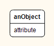
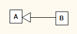
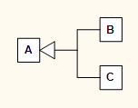
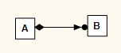
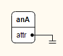
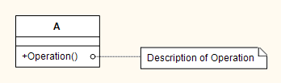
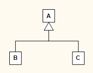
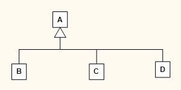
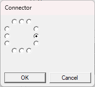

The user interface is divided into toolbar, canvas and statusbar.
Currently Spring++ supports creation of class and object diagrams.
You can add the following diagram elements with the provided tools:
| Concrete class. | |
| Abstract class. | |
|  | Object. |
| Note. | |
|  | Inheritance relationship. Class B inherits from class A. |
|  | Combined inheritance relationship. Classes B and C inherit from class A. |
| One-to-one composition relationship. | |
|  | One-to-many composition relationship. |
| One-to-one aggregation relationship. | |
| One-to-many aggregation relationship. | |
| Object reference relationship. | |
|  | Null reference. |
| Create instance relationship. | |
|  | Attach note relationship. |
The class, object and note elements are called container elements. The inheritance, composition, aggregation, reference, create instance and attach note elements are called relationship elements.
Spring++ has following tools:
| Selection tool. | |
| Grab tool. | |
| Class tool. | |
| Object tool. | |
| Note tool. | |
| Inheritance tool. | |
| Composition tool. | |
| Aggregation tool. | |
| Reference tool. | |
| Create instance tool. | |
| Attach note tool. |
The class, object and note tools are called container tools. The inheritance, composition, aggregation, reference, create instance and attach note tools are called relationship tools.
| Action | Description |
|---|---|
| click | Click a diagram element to select or deselect it, or click a canvas location to clear selection. |
| right-click | Right-click a diagram element or selection to open context menu showing actions for that diagram element or selected elements. |
| double-click | Double-click a diagram element to execute the default action assocated with it. The default action is to edit the properties of the element. |
| control+click | Control+click a diagram element to add or remove the element to or from the element selection. |
| drag | Point to a diagram element or selection and drag to move it to a new location. Point a canvas location and drag to create a rectangle selection. Point a resize handle of a rectangle selection and drag to enlarge the selection or make it smaller. |
| delete | When there is a rectangle selection or an element selection, press delete key to remove the selected diagram elements. |
| Action | Description |
|---|---|
| drag | Point a canvas location and draw with the mouse to move diagram to a different location. |
| escape | Press escape to activate the selection tool. |
| Action | Description |
|---|---|
| click | Point a canvas location and click to place a container element at that location. |
| escape | Press escape to activate the selection tool. |
| Action | Description |
|---|---|
| click | Click a container element near its connector point to start a relationship and set the element as the source element of the relationship. Then optionally click canvas locations to place routing points. Finally click a container element near its connector point to set is as the target element of the relationship. |
| control+click | Add a straight vertical or horizontal routing point. |
| escape | Press escape to cancel current operation and activate the selection tool. |
| Add ordinary inheritances from B to A and from C to A | |
| Control+click the inheritance arrows to select them. | |
| Right-click the selection to open context menu and select the Combine action. | |
|  | The inheritance arrows are combined. |
| Right-click a combined inheritance to open context menu and select the Split action. | |
| Add a new class and a new inheritance to A. | |
|  | Combine the inheritances. |
| Use the reference tool to start a reference relationship by clicking the attribute inside an object. Then control+click to the right of the object to create a horizontal routing point. Finally shift+click to the below to create an orphaned reference relationship. | |
| Double-click the relationship arrow to edit the properties of the relationship and set the cardinality to zero. Then click ok. | |
| The reference arrow changes to a null reference symbol. |
You can edit the properties of diagram elements by double-clicking an element, or by right-clicking an element and selecting the Properties... context menu item.
With the class properties dialog you can set the name and keyword of the class, and add, change and remove attributes and operations of the class. A nonempty keyword is shown above the class name in the diagram. It may be used to categorize the class to be, for example, a datatype class, or an enumeration. In the dialog, you can also set the class abstract. An abstract class has an italic style caption. It may have attributes, and concrete and abstract operations. A concrete class may have attributes and concrete operations, but it may not have abstract operations.
With the object properties dialog you can set the name of the object, and add, change and remove attributes of the object.
With the note properties dialog you can set the text lines of the note. To enter multiple lines, use the shift+enter key combination to insert newlines.
With the relationship properties dialog you can set the relation, cardinality, source and target texts and connector points.
For multiline texts, use the shift+enter key combination to insert newlines.
A primary text is shown above the relationship arrow, and the secondary text below the arrow. A nonempty keyword is shown above the text in the diagram, it can be used to categorize the relationship endpoint.
Each container element has twelve connector points, three on each side of the element. Thus the top and bottom sides have left, center and right connectors, and the left and right sides have top, center and bottom connectors. You can change the source and target connectors of a relationship in the connector dialog:
There are two kinds of selections: rectangle selections and element selections.
The rectangle selection is created by pointing to a canvas location with the selection tool and dragging the selection rectangle around diagram elements. Then right-clicking the selection opens a context menu with actions for the selected elements:
The element selection is created by clicking an element with the selection tool and then adding elements to the selection by control-clicking them. Then right-clicking the selection opens a context menu with actions for the selected elements: